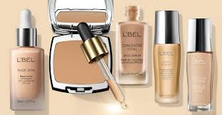
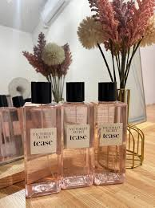

Descubre nuestra exclusiva colección de labiales en Glamour Pro.
Desde tonos vibrantes hasta acabados naturales,
nuestros labiales hidratan tus labios y dan color duradero, tambien encontraras todo tipo de sombras,
bases para todo tipo de piel.
¡perfectos para cualquier ocasión!
Labiales en una gama de colores,
desde nude hasta rojo intenso,
diseñados para resaltar tu belleza única.
Labiales en lápiz,Estos labiales permiten una aplicación precisa,
especialmente útil para delinear los labios antes de rellenarlos con color.
Sombras de todo tipo de tamaños, donde podras elegir la variedad de colores con brillos,
mates, para poder llevarlos en la bolsa

Bases, encontraras todo tipo de bases para tu piel, con una hidratacion que cuidara tu piel.
Perfumes con Olores Dulces, Florales y Más
Descubre nuestra exclusiva colección de perfumes con fragancias que van desde lo dulce y floral
hasta lo fresco y especiado. Cada perfume está diseñado para complementar tu estilo y personalidad,
¡perfecto para cualquier ocasión!

Un perfume floral con toques dulces, ideal para el día a día. Perfecto para quienes buscan frescura y elegancia en su aroma.
Nuestro perfume floral con notas de rosa, jazmín y un toque sutil de vainilla es perfecto para ocasiones especiales o para el uso diario. Esta fragancia dejará una impresión duradera.
Un perfume dulce y envolvente, con notas de caramelo, miel y frutas, ideal para quienes prefieren fragancias cálidas y acogedoras.
Este perfume dulce es perfecto para el invierno, cuando el clima frío pide fragancias reconfortantes y envolventes. Las notas de caramelo y frutas maduras te envolverán en un aroma delicioso.
Un perfume floral que resalta tu feminidad con elegancia, ideal para cualquier ocasión especial.
Este perfume combina notas florales de lirio y peonía con un toque suave de almizcle, ofreciendo un aroma fresco y sofisticado que resalta tu elegancia natural.
Explora nuestra gama de perfumes, ¡y encuentra el que más se adapte a tu estilo y personalidad!